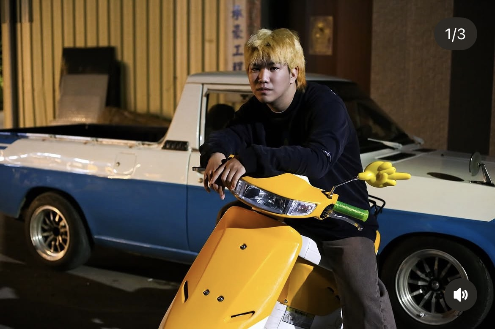

先理解，再溝通
有電商客服與櫃檯應對經驗，能站在使用者角度整理需求與訊息。
我是江定承，擁有電商客服、行政櫃檯與影像製作經驗。喜歡觀察人怎麼使用內容，也擅長把點子整理成腳本、畫面與清楚的溝通文字。

客服工作讓我習慣先聽懂對方在意什麼；剪輯、攝影與商品圖經驗，則讓我能把想法轉成畫面。面對社群企劃，我重視的不只是有沒有發文，也包括訊息是否清楚、內容是否適合平台，以及下一次可以怎麼做得更好。
有電商客服與櫃檯應對經驗，能站在使用者角度整理需求與訊息。
具短影音剪輯、攝影與商品圖製作經驗，能參與從腳本到成品的內容流程。
樂於協作、整理資料與跟進細節，讓發想可以落實成具體素材。
每一段工作都讓我更熟悉怎麼面對人、整理資訊，以及把事情確實完成。
累積電商第一線服務經驗，練習快速理解顧客需求、清楚說明資訊並維持穩定溝通；也讓我更在意內容是否回應受眾真正會問的問題。
支援櫃檯行政與日常聯繫，培養多工處理、細節確認，以及面對不同對象時調整溝通方式的能力。
以下整理品牌內容企劃與個人影像作品。品牌案例以實際參與的內容規劃、素材整理與合作支援呈現。
整理在地品牌故事與商品溝通方向，延伸至社群文案、短影音構想、創作者合作名單與銷售頁內容。
以影像作品展示攝影與剪輯經驗，觀察構圖、節奏與畫面如何傳遞商品或人物特色。
從受眾情境與主題切入，整理開場、訊息重點、畫面安排與剪輯方向，協助內容更清楚、更適合社群觀看。
整理符合品牌情境的 KOL／KOC 資訊與合作內容，支援邀約前的名單準備和溝通素材。
應用德語系｜大學畢業
持續練習跨文化溝通，也喜歡旅遊、海外生活與內容創作。
期待投入 OutTo Study 的社群行銷工作，從主題企劃、短影音到創作者合作，和團隊一起把每個想法落實。